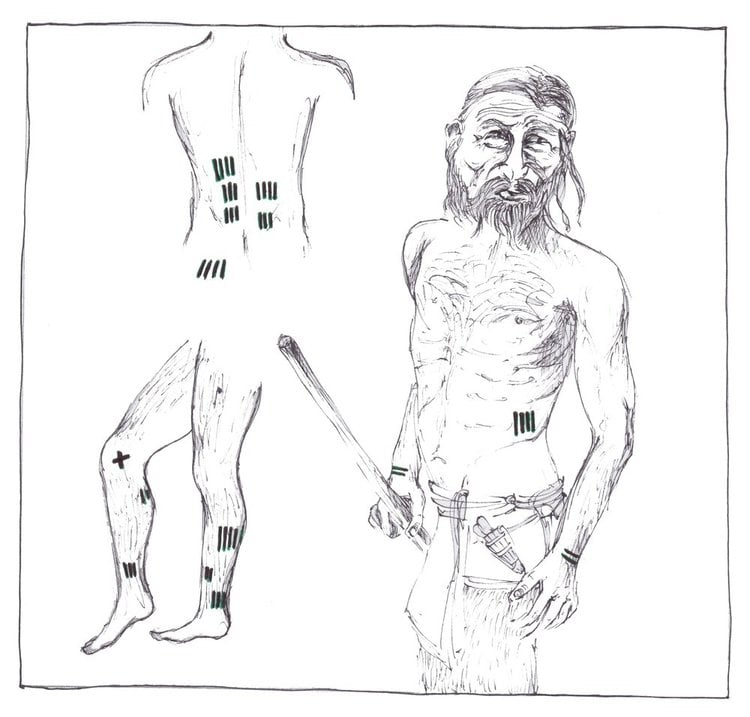

| Tipul | Originea | |
|---|---|---|
| Tipul nr.1 | TATUAJELE POLINEZE | arhipelagul celor circa 1000 de insule din Pacific, |
| Tipul nr.2 | TATUAJE MAORI | Noua Zeelanda |
| Tipul nr.3 | TATUAJELE CHINEZESTI | China |
| Tipul nr.4 | TATUAJELE JAPONEZE | Japonia |
| Tipul nr.5 | TATUAJELE EUROPENE | Irlanda |
| Tipul nr.6 | TATUAJELE CRIMINALILOR RUSI | Rusia |
| Tipul nr.7 | TATUAJELE THAI | Thailanda |
| Tipul nr.8 | TATUAJELE BANDELOR AMERICANE | U.S.A |
-->Termenul de „ tatuaj ” provine din cultura polineziana – „ tattaw ” detinand semnificatia de „ inscriptionare ” sau
„ornamentare”, preluat de James Cook in pelerinajul sau pe meleaguri exotice si este purtat acasa cu entuziasm – Cook fiind
de altfel un personaj care a contribuit. serios la raspandirea modei tatuajelor in ambientul occidental.
-->In 1771, intorcandu-se dintr-o calatorie efectuata in Marile Sudului, exploratorul, purtand cu sine o bastina care avea
intregul corp acoperit cu semne si simboluri bizare, introdusa in dictionarele epocii cuvantul „tattoo”, ca termen
descriptiv pentru acest gen de „ semne particulare”.
-->Polinezienii utilizau mai degraba o serie de onomatopee de tip „ ta-ta-ta ” pentru a descrie procesul de aplicare a tatuajelor de
catre indigeni cu ajutorul unor baghete ascutite, lovite cu maiestrie de o vraci cu experienta, care reusea sa realizeze veritabile
opere de arta pe trupurile lor, in functie de mesajul concentrat in imaginea tatuata.
-->Primul om tatuat de pe planeta, despre aspectul caruia se detin informatii dobandite prin metode stiintifice ar fi insa „ Otzi ” –
omul ghetarilor , a carui mumie a fost descoperita in septembrie 1991 in Muntii Alpi, in imediata vecinatate a frontierei dintre
Italia si Austria.
-->Potrivit opiniei specialistilor care au examinat mumia, Otzi era tatuat in scop terapeutic si nu decorativ , semnele
regasite pe trupul sau fiind datorate unor practici de natura medicala, de pe urma carora s-ar fi ales cu nu mai putin de 61 de
semne la nivelul nivelului. corpului – puncte, linii sau cruciulite, nu tocmai simplu de identificat cu ochiul liber.
-->Majoritatea semnelor se regasesc in imediata vecinatate a articulatiilor – particularitate care a intarit ipoteza ce sustine ca
tatuajele ar fi de natura terapeutica de tip „ acupunctura ”, desi noi studii au adus la lumina si un desen la nivelul toracelui,
intr-o zona perfecta sanatoasa. – fapt ce a reaprins polemicile cu privire la valenta efectivă a tatuajelor în epoca preistorica.
